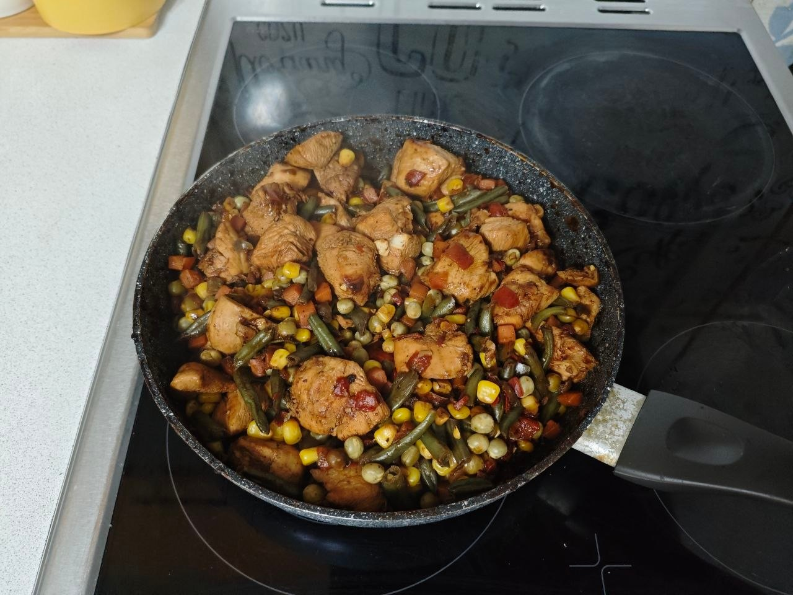

Основные блюда · 25–30 минут
Курица с овощами в терияки
Сочная куриная грудка с замороженными овощами в сладко-солёной глазури терияки. Готовится на одной сковороде без добавления масла: курицу обжариваем партиями, а соус добавляем в самом конце, чтобы он красиво покрыл мясо и не подгорел.
К ингредиентам
Ингредиенты · 4 порций
- Основа
- Куриная грудка (120 ккал | Б 21 | Ж 4) — 1 кг
- Замороженная овощная смесь Green 0 Green (35 ккал | Б 2,4 | Ж 0,2 | У 6) — 400 г (1 упаковка)
- Соус терияки San Bonsai (130 ккал | Б 3 | Ж 0 | У 30) — 120 г
- Специи
- Паприка — 1 ч. л.
- Сухой чеснок — 1 ч. л.
- Чёрный молотый перец или чили — по вкусу
- Соль — не добавлять: терияки уже солёный
Пищевая ценность
На 100 г: 137 ккал · Б 20.3 г · Ж 3.7 г · У 5.5 г
Шаг за шагом
Подготовка курицы и маринада
Нарежьте 1 кг куриной грудки поперёк волокон небольшими кусочками или полосками. Смешайте курицу с 80 г соуса терияки, паприкой, сухим чесноком и перцем. Оставьте мариноваться на 15–30 минут. Соль не добавляйте.
Обжаривание курицы партиями
Сильно разогрейте большую сковороду или вок. Обжаривайте курицу в 2–3 захода, выкладывая кусочки в один слой. Готовьте каждую партию примерно 5–7 минут, периодически переворачивая, до румяной корочки и полной готовности. Переложите обжаренную курицу на тарелку.
Приготовление овощей
В ту же сковороду выложите 400 г замороженных овощей. Готовьте на сильном огне 8–10 минут, пока овощи не прогреются, а лишняя влага не испарится.
Финальная глазировка терияки
Верните курицу к овощам, добавьте оставшиеся 40 г терияки и перемешайте. Прогрейте всё вместе ещё 1–2 минуты, чтобы соус равномерно покрыл курицу и овощи. Снимите с огня.
Подача
Подавайте сразу. По желанию добавьте немного зелёного лука или кунжута — эти добавки не включены в расчёт КБЖУ.
Курица должна быть полностью готовой; ориентир по температуре внутри самого крупного кусочка — 74 °C.